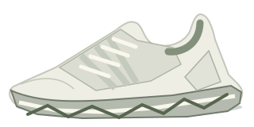

CP-100
Tahan pad / tombol 1–8 · lepas untuk berhenti
3 DETIK / PAD · ULANG
Pad kosong / di luar batas: diam.
SETUP / MAINTENANCE DI DALAM ENCLOSURE
ESP32-S3 / MAX7219MUTE
DRAG / SCROLL UNTUK MEMUTARSIMULATOR
CP-100 / SAND
MUTE
128.5 HzSINE / ODD
PELAT 60 × 60 cmKACA Ø50 cm
Pola ilustratif · bukan prediksi resonansi pelat.